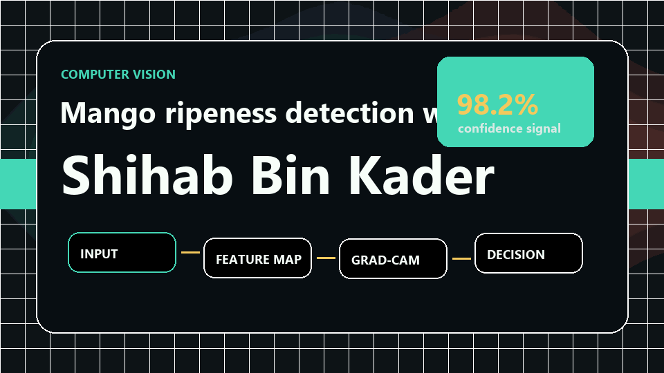

01 AI RESEARCHER / PRODUCT BUILDER
I TEACH MACHINES TO SEE, REASON & EXPLAIN.
I’m Shihab Bin Kader, a CSE graduate from Chittagong building interpretable AI systems across computer vision, multimodal learning, and human-centered products.
COMPUTER VISION✦EXPLAINABLE AI✦DEEP LEARNING✦MULTIMODAL SYSTEMS✦
COMPUTER VISION✦EXPLAINABLE AI✦DEEP LEARNING✦MULTIMODAL SYSTEMS✦
02
ABOUT / MANIFESTO
I BUILD AI THAT DOESN’T JUST MAKE A DECISION — IT HELPS PEOPLE UNDERSTAND WHY.
My research sits at the intersection of computer vision, deep learning, and Explainable AI. I’m especially interested in interpretable hybrid models for precision agriculture, smart farming, safety, and accessible human-centered tools.
From a 6,000-image mango ripeness dataset to real-data medicine and skin-screening interfaces, I turn research ideas into working systems with clear, responsible user experiences.
03
SELECTED / REPOSITORIES
WORK BUILT TO MOVE IDEAS FORWARD.
11 PUBLIC PROJECTS · LIVE FROM GITHUB

01 / PUBLICATION
MANGO RIPENESS CLASSIFICATION
A hybrid Xception-LSTM system for classifying six mango ripeness stages, paired with Grad-CAM to make model attention visible and interpretable.
- Computer Vision
- Deep Learning
- Explainable AI
02Python
AI PRODUCT SYSTEM
StartupPilot AI
Production-oriented SaaS that turns a raw startup idea into an end-to-end MVP plan, architecture, roadmap, and investor story.
03JavaScript
RESPONSIBLE HEALTH AI
FaceSkin Lens
Face-only skin pre-screening research prototype using real SCIN data, detector signals, and an explainability heatmap.
04JavaScript
EVIDENCE-FIRST PRODUCT
MedSafe Lens
Medicine safety review assistant that turns RxNorm and openFDA label data into traceable, medicine-specific review briefs.
05Python
MODEL INTERPRETABILITY
ModelDNA
An MRI scan for neural networks: inspect what a vision model sees using Grad-CAM and explainable AI workflows.
06Python
ACCESSIBLE COMPUTER VISION
Sign Sense
Real-time ASL recognition and learning experience with CNN-based detection, interactive tutorials, and progress concepts.
07JavaScript
TWO-HAND 3D PORTAL
GestureCam FX
Create a smart AR portal with one left-hand pinch, then launch and dust-transform ten true 3D models with your right hand.
08Python
VISION SAFETY
Drowsiness AI
Computer-vision prototype focused on identifying visual fatigue and drowsiness signals for safer driving concepts.
09Python
MULTIMODAL RESEARCH
Multimodal AI
Experiments that combine computer vision, natural language processing, and generative AI into unified workflows.
10Python
VISION + LANGUAGE
Image Caption Generator
Image-to-text generation work connecting visual feature understanding with natural-language descriptions.
11Jupyter Notebook
DATA STORYTELLING
Movie Data Analysis
Notebook-based exploration of movie datasets, patterns, and trends through analysis and visual storytelling.
12CSS
THE META PROJECT
This Portfolio
The source of the page you are exploring—designed as a motion-rich, accessible home for my research and products.
04
RESEARCH / EDUCATION
IEEE RAAICON 2025
MAKING THE BLACK BOX VISIBLE.
Hybrid Xception-LSTM Model for Explainable Mango Ripeness Classification Using Grad-CAM.
01INPUT6,000 images
→
02FEATURESXception
→
03SEQUENCELSTM
→
04EXPLAINGrad-CAM
B.Sc. in Computer Science & Engineering
East Delta University, Chittagong · 162 credits · CGPA 3.13 / 4.00
Dean’s List & EDU Scholarship
Recognized for academic achievement and awarded tuition support for undergraduate performance.
Community Volunteer
Supporting children through educational and social programs, events, and child-welfare initiatives.
05
CAPABILITIES / TOOLKIT
AI / RESEARCH
Computer Vision · Explainable AI · Deep Learning · Transfer Learning · Hybrid CNN-RNN · Multimodal AI
MODELS / FRAMEWORKS
TensorFlow · Keras · Xception · LSTM · Grad-CAM · OpenAI APIs · RAG workflows
ENGINEERING
Python · JavaScript · Java · C · C++ · FastAPI · Next.js · HTML · CSS · MySQL · GitHub
LANGUAGES
Bengali — mother tongue
English — professional working proficiency
HAVE A RESEARCH IDEA OR A PRODUCT TO BUILD?